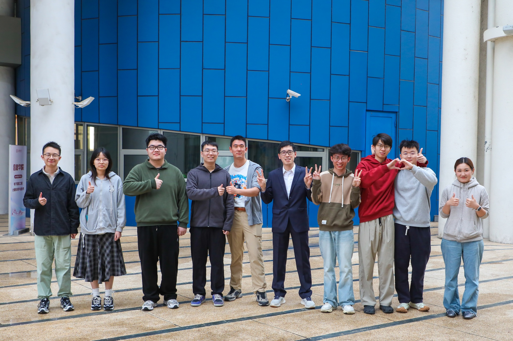

Welcome to the Scaled Embodied AI (SEA) Lab at ShanghaiTech University, led by Prof. Jiayuan Gu. We aim to advance the field of embodied artificial intelligence through innovative research and applications. Our research focuses on robotics and 3D vision, e.g., generalizable and generalist robot policies as well as interaction-oriented 3D understanding and generation.
